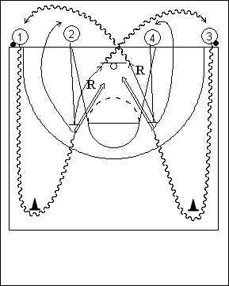

Déroulement
- Quatre files. Les ballons se trouvent dans les files extérieures (1 et 3).
- 1 et 3 dribblent, passent autour du cône et viennent prendre un jump shoot, respectivement devant 2 et 4, qui se contentent de lever les bras puis d’effectuer le boxing out suivi du rebond.
- 1 va en 2 et 2 va en 3 avec le premier ballon. 3 va en 4 et 4 va en 1 avec le deuxième ballon.
Coaching points
- Insister sur la qualité du jump. On doit passer au dessus des mains du défenseur tout en restant précis.
- Exiger un rebond de qualité (timing du boxing out) des joueurs 2 et 4.